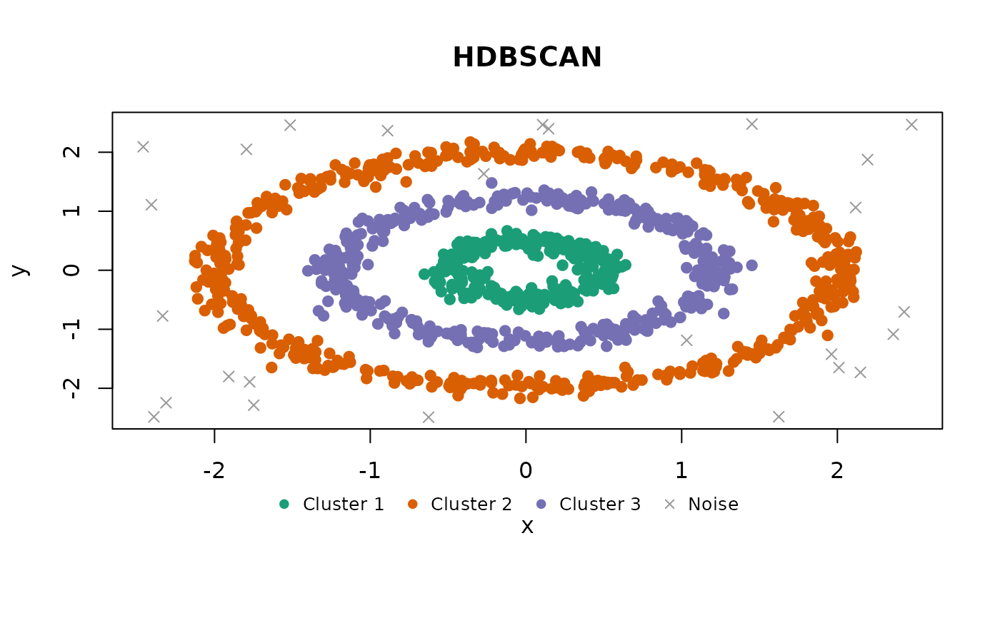
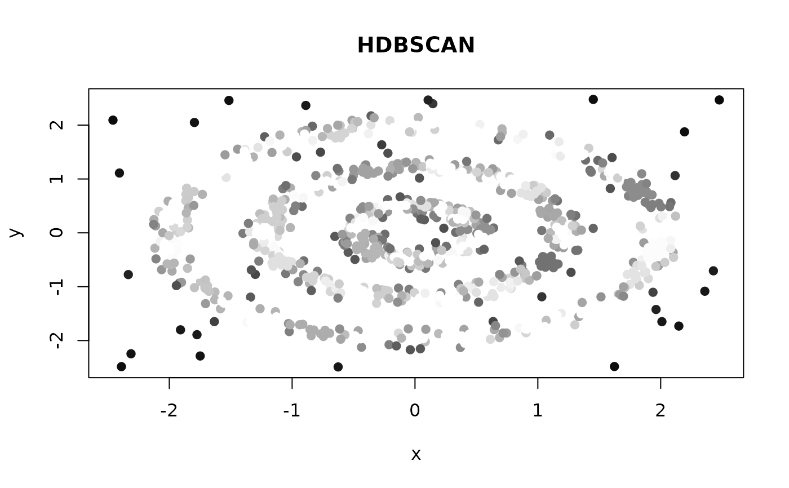

Produces a scatter plot matrix (pairs plot) of clustered data, colored by
cluster assignment. For 2-column data a single scatter plot is produced
instead. Noise points (NA cluster) are shown as grey crosses.
Usage
# S3 method for class 'shoal_clustering'
plot(
x,
xcol = NULL,
ycol = NULL,
pal = shoal_palette(x$n_clusters),
col = NULL,
pch = NULL,
...
)Arguments
- x
A clustering result object.
- xcol, ycol
Optional column name or index to plot on the x/y axis. When both are supplied, a single scatter plot is produced instead of a pairs matrix.
- pal
Character vector of colours for clusters, indexed by cluster ID. Defaults to
shoal_palette()for the number of clusters found.- col, pch
Optional per-observation colours and plotting characters, recycled to the number of rows. When given they replace the cluster colouring and the noise crosses respectively, and no legend is drawn.
- ...
Additional arguments passed to
pairs()orplot.default().main,xlabandylabgiven here replace the defaults (the algorithm name and the column names).
Details
When xcol and ycol are supplied, a single scatter plot of those two
variables is produced instead of the full pairs matrix. Columns can be
specified by name or integer index.
Colours come from pal, one per cluster, with noise in grey. To colour
points by something other than their cluster, pass col directly: it is
recycled to one entry per observation and used as is. The same goes for
pch. The cluster legend is drawn only when neither is overridden, since
it would no longer describe the points.
Examples
res <- shoal_hdbscan(rings, min_cluster_size = 15L, min_samples = 5L)
plot(res)

# Colour by something else entirely, e.g. an outlier score.
plot(res, col = grey(1 - res$outlier_scores), pch = 19)
